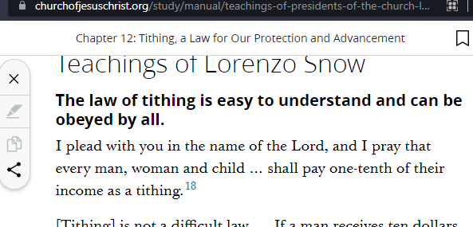
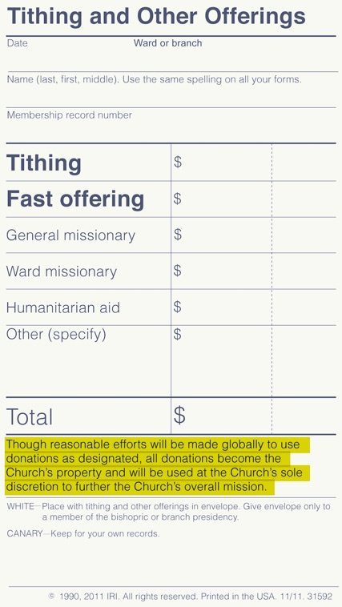

💵 Tithing¶
Estimated time to read: 24 minutes
Quick note: I would like to be proven wrong about the ideas in this page. To me, this is disheartening, and to you, it may sound very pessimistic. If you have compelling information that disproves any of this, there's a comment section at the bottom of each page.
Tithing is required to get into the temple, right? And temple ceremonies are required for salvation? That means that tithing is required for salvation.
- A religion that requires payments for full access isn’t a religion.
- If tithing is required, it isn’t voluntary.
- A church that promises a happy afterlife in exchange for money is indistinguishable from fraud.
- If your god needs your money, your god is incompetent.
- “God doesn’t need the money” Then what the hell am I paying for? Salvation is kept behind a paywall.
- “It’s just so we can get blessed” There’s no way to qualify for those blessings, other than donating money to an organization with 0 accountability?
- “We need tithing to do the Lord’s work.” Idk has the church tried praying for money? Has God asked his family and friends for money instead?
- If the church is great with our money, why don’t they publish their budgets? Why don’t they prove that they are good stewards of our donations? Why, instead, did they set up 13 shell companies?
Please, list the ordinances I qualify for without paying any money. “Tithing is a commandment” is not a reason.
As I See It¶
In college, during the same semester that I was taking accounting classes, I encountered a MormonLeaks whistleblower report that the LDS church had an outrageous sum of money, not being disbursed. Trying to apply what I’ve learned from accounting, I resolved that the church surely has balance sheets and reports. They could set the record straight about how much money they have, and where it’s going.
In General Conference, I’d listen to their financial audit report. I was not impressed. “We have examined ourselves, and found us to be following our own rules.” What rules? Why not have an external audit? Can we get more detail than a pass/fail?
If they do have accounts and reports, they are not publicly available. It sounds like a deliberate choice to conceal that information. I’m asked to send money to an organization with absolutely no accountability for how it’s used. I decided to not pay a dime more until I see some satisfying data on how the money gets used. That is tangible, quantitative information that can be reported, no faith needed. The number is there, but it is hidden from me.
How much do they have?¶
As of 2019, upwards of 100 billion in investment portfolios:
- Washington Post: Mormon Church has misled members on $100 billion tax-exempt investment fund, whistleblower alleges
- Wall Street Journal: The Mormon Church Amassed $100 Billion. It Was the Best-Kept Secret in the Investment World.
This number is difficult to nail down, seeing how the church doesn't publish any useful information about how much money they have. This is a big enough tangent that I'll direct you to another page of notes describing what I've found.
Internal audits promise that everything is fine, and "in accordance with appropriate accounting practices, approved budgets, and Church policies and procedures." This isn't necessarily a lie—the church most certainly has budgets, policies, procedures, etc, and perhaps amassing hundreds of billions doesn't breach any of those rules. That does raise the question of what exactly are those rules, then? Can any readers point me to them? I've got a comment section for exactly that purpose.
Rationalization¶
Quoting Malachi¶
Prove me now herewith . . . if I will not open you the windows of heaven, and pour you out a blessing, that there shall not be room enough to receive it.
Chapter divisions weren’t present in the original revisions of the King James Version. The Bible, including the book of Malachi, was one big ol' wall of text. Context can carry over across those drawn boundaries between chapters. The book of Malachi is a criticism of the temple priest class in ancient Judaism. Chapter 2 verse 1 says “And now, O ye priests, this commandment is for you.”
Chapter 3 verses 8 - 11 are not directed to the general public to contribute to God’s storehouse. They’re reprimanding the priests for misusing the tithing funds to live lavishly. Malachi is saying that this misuse of tithing is why, as 3:9 says, “ye are cursed.”
Chapter 3 verse 3 is a threat to “the sons of Levi”. What we today call the Aaronic Priesthood was only found in those of Levitical bloodline and lineage.
This is not an admonition for the general public, us common folk in [current year] reading the Old Testament. He is talking to the priests of the temple, telling them that if they shape up, they'll be blessed.
This passage in Malachi gets quoted pretty often. While I'm not sure how to prove this, what I won't do is make a comprehensive list of how often this passage is mentioned when talking about tithing. You don't want to read that, and I don't want to write it.
That said, here are some references I found from a cursory search:
- Sacred Transformations, Aaron L West, Ensign December 2012 (excerpts shown below)
- Topics and Questions: Tithing, Overview
- Tithing: Opening the Windows of Heaven, Elder Neil L. Andersen, General Conference October 2023
- Will a Man Rob God?, Elder Yoshihiko Kikuchi, General Conference April 2007
- Tithing, Dallin H Oaks, General Conference April 1994
- Missionary pamphlet on tithing, other missionary material like those awful The District DVDs we had to watch in the mission field
I've got a separate page for some General Conference segments and quotes of interest, including some of the above mentions.
Quoting Lorenzo Snow¶
I plead with you in the name of the Lord, and I pray that every man, woman and child … shall pay one-tenth of their income as a tithing.
— Chapter 12: Tithing, a Law for Our Protection and Advancement, Teachings of Presidents of the Church: Lorenzo Snow

That ellipsis and that footnote are doing some heavy lifting. What is it omitting? If only the church provided its own manuscript of that conference report. Alas, it does not. 1899 is too far back for its "official" archives to reach.

I plead with you in the name of the Lord, and I pray that every man, woman and child who has means shall pay one tenth of their income as a tithing.
— 1899 General Conference Report, archive.org
“who has means” changes the context of this commandment. It necessarily excludes those who are impoverished. It doesn't imply at all that members should first pay tithing before addressing other responsibilities, as modern General Conference speeches suggest.
Lorenzo's “I plead” does not really sound like it should be equated to “thus saith the Lord”. Also note in the top right corner of that image is year-over-year comparisons of tithing money "paid" in July - September, 1808 - 1809. I wonder why they stopped publishing information like that? Or, why did they publish it like that in the first place?
Joseph F Smith¶
Furthermore, I want to say to you, we may not be able to reach it right away, but we expect to see the day when we will not have to ask you for one dollar of donation for any purpose, except that which you volunteer to give of your own accord, because we will have tithes sufficient in the storehouse of the Lord to pay everything that is needful for the advancement of the kingdom of God.
— Chapter 31: Obedience to the Law of Tithing, Teachings of Presidents of the Church: Joseph F. Smith
This quote from the prophet in 1907 says we won’t need to ask you to pay tithing once we have enough to be self-sufficient. $100 billion evidently isn’t enough to be self-sufficient. “Everything that is needful” seems to have developed a lot since 1907. Everything that is needful seems to include stock holdings and real estate.
I could imagine someone defending this quote by pointing to the qualifier "except that which you volunteer to give of your own accord," and that it is what's happening today. I don't buy it— if salvation is gatekept behind tithing, then tithing is not voluntary.
We owe God¶
Tithing is not a free-will offering; it is a debt, payment of which brings great blessings.
— Concerning Tithing, First Presidency Message, President Marion G. Romney, Second Counselor in the First Presidency; Ensign, June 1980
Oh. Cool, thanks. Always thrilled to find that our loving Heavenly Father's Plan of Eternal Happiness™ involves me being indebted from birth.
Paying is a privilege!¶
One of the blessings of membership in The Church of Jesus Christ of Latter-day Saints is the privilege of paying tithing. This privilege is a double blessing. By paying tithing, Church members show their gratitude to God for their blessings and their resolve to trust in the Lord rather than in material things. They also help further the work of the Lord in the earth, blessing others of God’s children with the opportunity to learn of Him and grow in the gospel.
Tithing funds are always used for the Lord’s purposes—to build and maintain temples and meetinghouses, to sustain missionary work, to educate Church members, and to carry on the work of the Lord throughout the world.
— Topics and Questions: Tithing, Overview
. . . and then [my mother] thanked our Heavenly Father for the privilege of living the law of tithing. I immediately experienced a feeling of comfort and assurance. Living the law of the tithe was a privilege and would bring blessings.
— Tithing: A Privilege, Elder Ronald E. Poelman, General Conference April 1998
To me, this is such a fascinating word choice. Can that privilege be revoked? Is the law of consecration a privilege that got revoked? Are other commandments described as privileges? Is the Word of Wisdom a privilege? Or is it just this one commandment which is a quantifiable, measurable transaction (at least on one side)?
Where does the money go?¶
Good question. We don’t have access to the church's financial documents, but folks who are more patient than I am can point to public records of what the church owns.
Do we have access to the church’s 990 non-profit forms? Do we have access to complete independently audited financial documents? ... Why not? Moreover, why are they requesting that I give them money?
How do we grapple with the cognitive dissonance of paying 10% of your money, but still needing to engage in fundraising efforts? When was the last time your ward’s budget had enough to cover girls’ camp?
Tithing Slip¶
The bottom of the tithing slip tells you everything you need to know:

“Though reasonable efforts will be made globally to use donations as designated, all donations become the Church’s property and will be used at the Church’s sole discretion to further the Church’s overall mission.”
So, in essence, it doesn’t matter where the money is paid from… it all gets used however the church sees fit, so the expectation is that the donation is used for anything and everything.
Public Information¶
The Mormon Church's real-estate empire easily exceeds $1 billion, including farms and ranches in the West and Midwest, buildings and apartments on the West Coast and a huge chunk of land in central Florida, The Arizona Republic reported Tuesday.
Given its enormous income from tithing and business operations, it appears the church is investing several hundred million dollars a year in securities and real estate, the newspaper said in the third installment of a four-part series on the holdings of the Utah-based church. "I would say they're probably one of the largest private owners of farmland in the United States," said John Scott, professor of land economics and farm management at the University of Illinois, although he hasn't compiled records to prove that.
Officials of The Church of Jesus Christ of Latter-day Saints refuse to disclose information about real-estate holdings, even to members, saying such information would distract from the church's ecclesiastical mission.
— LDS CHURCH REAL-ESTATE HOLDINGS INCLUDE FARMS, RANCHES, BUILDINGS, Deseret News 1991
If I keep going, it'll just be a wall of highlighted text...
Need I remind readers that Deseret News is owned by the LDS Church.
The church owns and manages two different types of businesses – non-profit and for-profit. . . . On the other hand, Deseret News and the City Creek shopping center in downtown Salt Lake City are for-profit business – both owned and operated by Corporation of the Presiding Bishop, the business division of the Church of Jesus Christ of Latter-day Saints.
The majority of the church’s for-profit companies are run under a holding company called Deseret Management Corporation. The Deseret Management Corporation board of directors is made up of the three members of the First Presidency, three rotating members of the Quorum of the Twelve Apostles, and the Presiding Bishopric.
— Follow the Profit: A Guide to the LDS Church’s For-Profit Companies, LDS Daily, May 4 2016
Philanthropy, maybe¶
If you’re a billionaire, they’ve even got a special donation avenue for you, via LDS Philanthropies, Private Foundation. Is this a problem? Strictly speaking, no, it isn't morally wrong, but it certainly doesn't feel like they're asking for donations to support The Lord's work here on earth. In fact...
Private foundations have been a popular and effective method for wealthy families to create a family legacy of philanthropy.
. . .
There are many advantages of a private foundation:
Personal advantage: creating a private foundation is in essence creating one's own personal charity; a private board is hand selected for the foundation.
Family advantage: a donor and his or her children frequently constitute the entire board of a private foundation; a private foundation can provide a structure for a family's charitable activities; family members can be involved in making grants and helping future generations understand the meaning of philanthropy.
Control advantage: private foundations provide great freedom and spontaneity in gift giving. The donor and the foundation's board have absolute control and can hire their own staff; they can choose which charities to benefit.
— Excerpts from the LDS Philanthropies intake page (link above)
so... what the fuck.
This is an avenue for PR, and so that "wealthy families" can feel like being raised as billionaires isn't actually bad. Even your kids can comprise the entire board of directors, and have autonomy to decide how the money is spent! Little Timmy always wanted to be on a board of directors that spends daddy's money; that'll make a fine Christmas gift that keeps on giving!
I find this very upsetting— Is this what Jesus taught? Luke 11:39-43, 14:12-14, Mark 10:20-23, and 12:41-44 would all like to have a word with you.
We can hype up how great it is to build up your own personal charity with a private board of directors for future generations to laud how generous you are, but if you're going to do that, don't be the same organization that teaches us about the Widow's Mite. This is self-aggrandizement. That promotional statement has absolutely nothing to do with the church's declared mission, or any purpose of tithing.
God bless America, if I keep reading into this, my notes will devolve further into chaotic ranting 🙃
City Creek Mall¶
Funding¶
Chronologically, the earliest time I recall hearing about this was in General Conference, from Gordon Hinckley himself:
We feel we have a compelling responsibility to protect the environment of the Salt Lake Temple. . . . We have felt it imperative to do something to revitalize this area. But I wish to give the entire Church the assurance that tithing funds have not and will not be used to acquire this property. Nor will they be used in developing it for commercial purposes.
Funds for this have come and will come from those commercial entities owned by the Church. These resources, together with the earnings of invested reserve funds, will accommodate this program.
— The Condition of the Church, Gordon B Hinckley, General Conference April 2003
Better get ahead of those rumors and defend our decisions immediately. Nothing to see here, just business as usual. Note the explicit delineation of tithing money versus "earnings of invested reserve funds." That might become relevant later.
An appeals court has thrown out Utahn James Huntsman’s fraud lawsuit against The Church of Jesus Christ of Latter-day Saints over millions of dollars in tithing.
In a unanimous ruling, the 9th U.S. Circuit Court of Appeals found “no reasonable juror” could have concluded that the Utah-based faith misrepresented the source of funds it used to spend $1.4 billion on the building and development of City Creek Center, a church-owned mall and residential towers in downtown Salt Lake City.
“The church had long explained that the sources of the reserve funds included tithing funds,” according to an opinion summary issued Friday by the 9th Circuit, “and Huntsman had not presented evidence that the church did anything other than what it said it would do.”
— LDS Church prevails as federal appeals court tosses out James Huntsman’s tithing lawsuit, Salt Lake Tribune, 2025 January 31
Isn't it amazing how a well-funded legal team can change the past?
It's to protect downtown SLC!¶
A recent column on Forbes.com (“Salt Lake City’s Sacred Space”) by Joel Kotkin takes a look at how City Creek — an initiative of The Church of Jesus Christ of Latter-day Saints — is enhancing downtown Salt Lake City. The Church undertook the City Creek project to protect the environment around Temple Square.
— Forbes Covers City Creek Project, Church Newsroom
Protect the environment? Protect it from what? This sounds like gentrification with extra steps. No, really, that just sounds like gentrification, full stop.
Next up: that Forbes article that the LDS Newsroom got excited about.
Over the next few years, with an investment estimated locally at $2 billion, developers hope to transform a 20-acre swath of the city's now-uninspired central core. By 2012 they hope to create a model downtown district with a whole new array of retail shops and residential towers accommodating some 700 units.
. . .
The driving force here is not economics, but the desire of Salt Lake's most powerful institution, the Church of Jesus Christ of Latter Day Saints, to salvage its immediate neighborhoods. "The church's primary notion is to protect the Temple Square and the headquarters of the Church," explains Mark Gibbons, president of City Creek Reserve, the church's development arm. "That's first and foremost. This development would not have been done just on a financial basis, I can tell you that."
— Salt Lake City's Sacred Space, Forbes
Protect from what?
PROTECT FROM WHAT, MARK GIBBONS?
But whoso hath this world’s good, and seeth his brother have need, and shutteth up his bowels of compassion from him, how dwelleth the love of God in him?
My little children, let us not love in word, neither in tongue; but in deed and in truth.
Or, in layman's terms, if you have spare resources ($2 billion for a shopping center) and see someone without resources, and opt not to share, how can you say you love God? Don't just say you love God, do something about the poverty (1, 2, 3) around you!
Just say what you mean— you're trying to protect the church office building from poor people.
Opening Day¶
President Henry B. Eyring, first counselor in the First Presidency of The Church of Jesus Christ of Latter-day Saints spoke at the City Creek Center opening. Church President Thomas S. Monson, second counselor Dieter F. Uchtdorf and the Presiding Bishopric of the Church also attended the event 22 March 2012.
— City Creek Center Opens, Church Newsroom
Boy, this... This is quite the sight. They sure seem excited about this project. A religious institution having literally any involvement, despite whatever public assurances they give us, is upsetting to me. Is this what Jesus taught?
What it is not¶
I don't think I need to point out that the City Creek project is not a homeless shelter, not a soup kitchen, not a hospital, not a food bank, not subsidized housing— not even affordable housing— it's a shopping mall for upper-middle class folks. Rent there is $2,329 - $6,533, as of March 2024. The low end of that range costs more than my mortgage, taxes, and HOA dues combined. Those links are to third party sites, because to no one's surprise, City Creek Landing's official site doesn't list the rent; only the deposit.
It's Utah's Rodeo Drive without the stuffiness. City Creek is home to the national, luxury, and local brands you love in one of the most unique shopping environments in the country.
— City Creek Center – Shopping Elevated, utah.com (owned by the church)
Don't forget to check out their list of stores that are paying the Church to be in their mall. You can't even fucking park there without paying.
Utah's Rodeo Drive? There are few other places I could think of to embody vanity, pride, and worldly values. Does Utah want or need such a place? Does it seem odd that the LDS church owns this bastion of capitalism? Wasn't it the great and spacious building that, of all details to be recorded in scripture, highlighted that "their manner of dress was exceedingly fine"? That had the "attitude of mocking and pointing their fingers" toward those who were pursuing salvation? The church owns it, and advertises it as being comparable to Rodeo Drive.
Is this what Jesus taught? Do you want to donate to a charitable organization with no independent audits, no public financial records, or accountability? No? Why not, do you have a problem with porn or something?
Beneficial Life¶

Archived link of President Monson's advertisement
Beneficial Life Financial Group is still around, still owned by Deseret Management Corporation. Moving the business from life insurance to "finance" also seems shady to me, being owned by a church accused of holding a lot more money than they have any business with.
What's wrong with this?¶
Take a step back and think rationally, maybe without cursing.
Yes, the Church is within its rights to do this. They're accountable only to themselves. They didn't outright create a mall, there was a mall already there. It's downtown Salt Lake. A high-rise and a shopping center belong downtown—it is not out of place, nor is it misplaced. I don't have a source handy, but I had heard the claim that since the LDS faith practically founded Salt Lake, they have stakes, connections, ownership partially or wholly in industries and businesses. Is that, on its face, wrong? No.
However...
Imagine seeing the Catholic Church buying up some established McDonald's franchises. Imagine the JW's Watchtower buying ownership of plastics manufacturing. 7th day Adventist owning a bus fleet, or railway.
Now picture the LDS church owning a shopping mall and apartment complex.
None of those things are pearl-clutching revelations to bring the masses to grab their pitchforks and start lynching. They definitely feel out of place, though. The public image of these organizations and religions is that they're charitable, running on donations, not engaging in any commercial business. I feel a lot of cognitive dissonance reading about it. I was raised to believe that the Church runs on donated tithes.
I cannot understate this enough— this is not a problem that reading scriptures and praying is going to fix. This is not a problem that will be fixed by humming a hymn and taking sacrament. I want accountability.
Where should the money go?¶
A shopping center that the church itself describes as luxurious? Extravagant temple furnishings? All for Jesus Christ, the man who was born in a stable, who taught sermons on fishing dinghies, on the sides of roads, and on top of hills. The man who disliked extravagance. The man who said “If you love me, feed my sheep.”
But of course, that one story about him approving of the woman anointing his feet with oil totally translates to aggrandizing affluence.
The young man saith unto him, All these things have I kept from my youth up: what lack I yet?
Jesus said unto him, If thou wilt be perfect, go and sell that thou hast, and give to the poor, and thou shalt have treasure in heaven: and come and follow me.
But when the young man heard that saying, he went away sorrowful: for he had great possessions.
So when they had dined, Jesus saith to Simon Peter, Simon, son of Jonas, lovest thou me more than these? He saith unto him, Yea, Lord; thou knowest that I love thee. He saith unto him, Feed my lambs.
He saith to him again the second time, Simon, son of Jonas, lovest thou me? He saith unto him, Yea, Lord; thou knowest that I love thee. He saith unto him, Feed my sheep.
He saith unto him the third time, Simon, son of Jonas, lovest thou me? Peter was grieved because he said unto him the third time, Lovest thou me? And he said unto him, Lord, thou knowest all things; thou knowest that I love thee. Jesus saith unto him, Feed my sheep.
Idk, seems important. Are we going to interpret this as doing baptisms for the dead, while our living fellow humans are languishing in squalor?
But Solomon built him an house.
Howbeit the most High dwelleth not in temples made with hands; as saith the prophet,
Heaven is my throne, and earth is my footstool: what house will ye build me? saith the Lord: or what is the place of my rest?
Hath not my hand made all these things?
Somehow, we can read this and call LDS temples “house of the lord.”